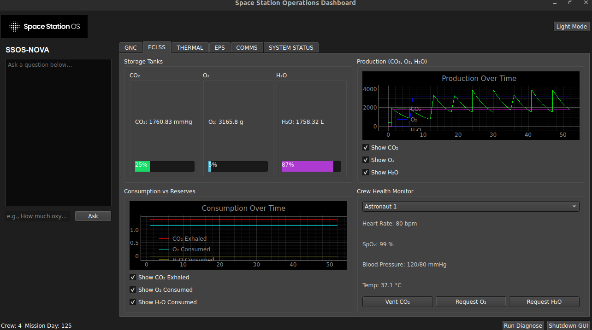
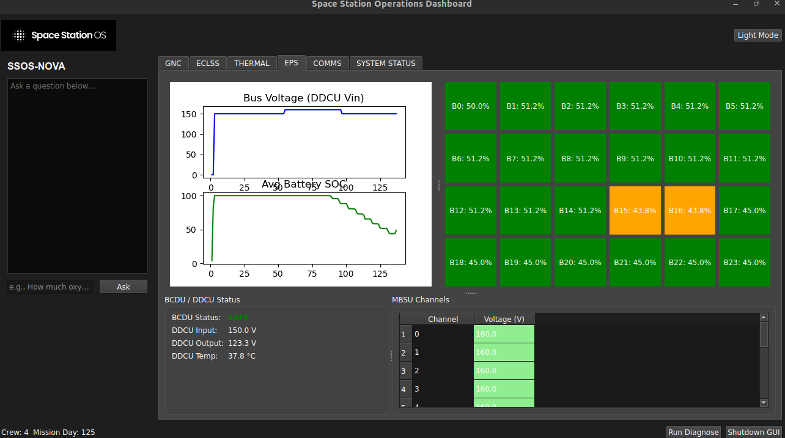

Space Station OS (SSOS)

Open-Source ROS 2 Platform for Modular Space Station Subsystems
Open-Source ROS 2 Platform for Modular Space Station Subsystems
Space Station OS (SSOS) is an open-source platform built on ROS 2 to unify the development, simulation, and real-time control of modular space station subsystems. By simulating critical life support, thermal regulation, and power systems, SSOS provides an accessible environment for testing autonomous behaviors, validating hardware interfaces, and developing future space infrastructure software.
SSOS draws inspiration from the International Space Station (ISS) and adopts a software-defined space station philosophy. Each subsystem is modularized into ROS 2 nodes with standardized interfaces, allowing flexibility, scalability, and reusability. While SSOS is a simulation, its architecture is hardware-ready, enabling integration with future testbeds and research facilities.
The ECLSS simulation models the core processes needed to sustain life aboard a spacecraft: air revitalization, oxygen generation, and water recovery. Implemented as ROS 2 action servers and services, these subsystems replicate ISS-inspired closed-loop functionality.

The Thermal Control System simulation abstracts the ISS Active Thermal Control System (ATCS), modeling heat transfer across avionics, tanks, and environmental hardware. It uses configurable YAML files to define thermal nodes and links, with an RK4-based solver for accurate numerical integration.

The EPS simulation models ISS-style primary and secondary power distribution, including solar arrays, battery ORUs, bus switching, and regulated DC-to-DC conversion. Each component is abstracted as a ROS 2 node, reflecting real hardware operations.

SSOS demonstrates how complex, safety-critical space systems can be translated into modular ROS 2 simulations for better testing, integration, and research. By blending systems engineering, software architecture, and collaborative open-source development, SSOS lowers the barrier for space station software innovation and provides a foundation for autonomous, sustainable space habitats.